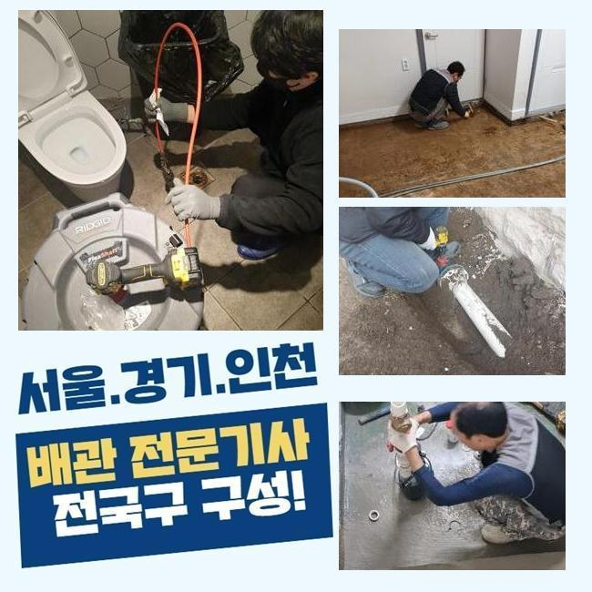
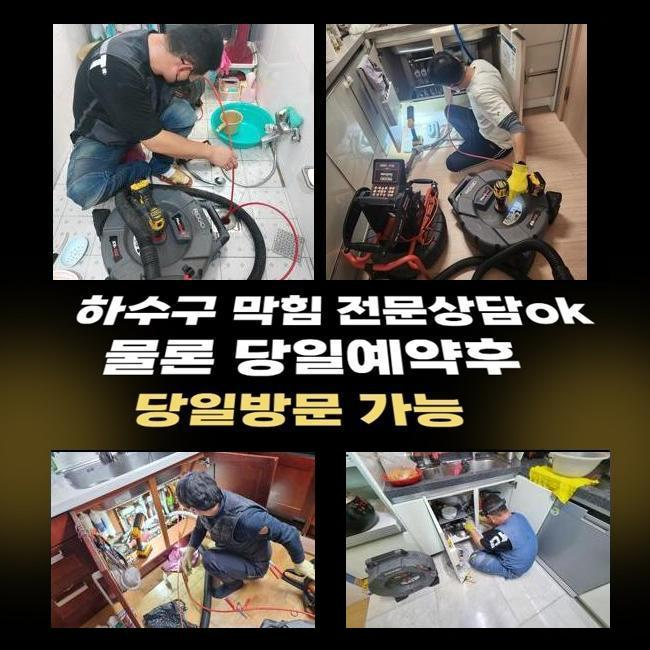
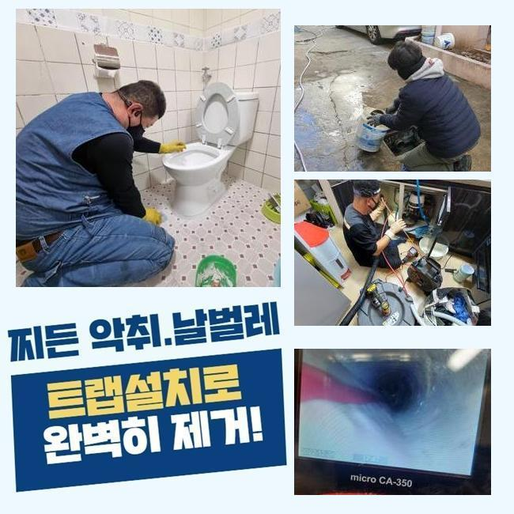
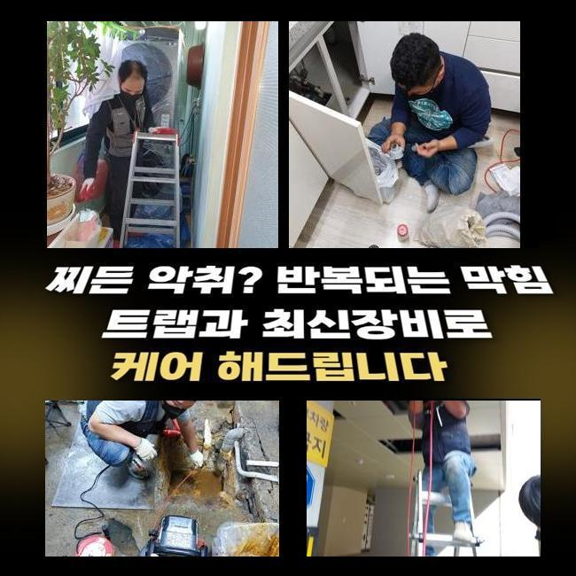
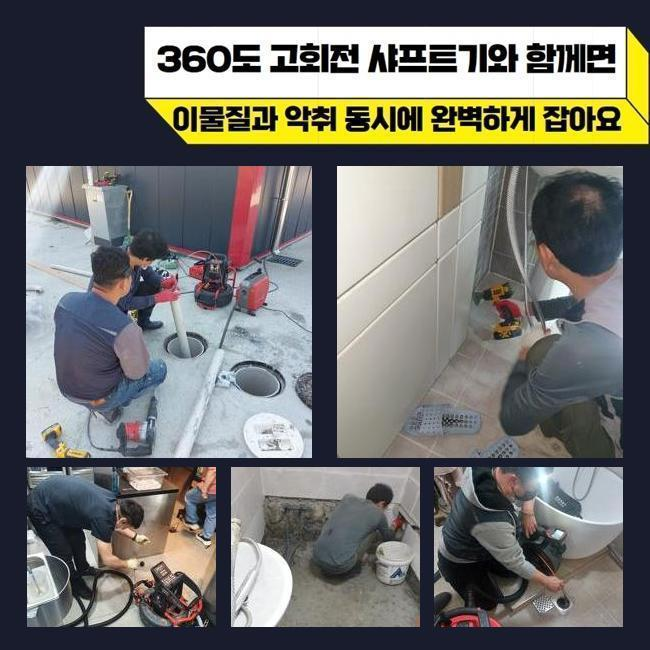
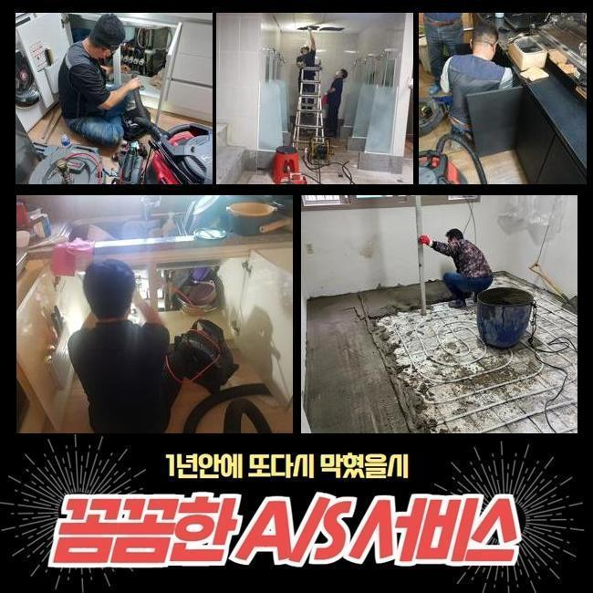
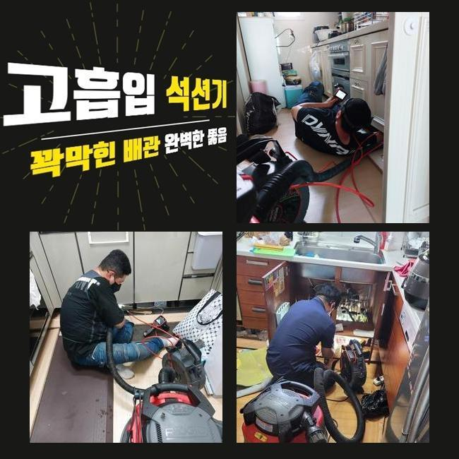

🏠 안양 관양동씽크대역류 갈산동 배수구뚫기 배관공사
안양 갈산동 싱크대막힘 전문 시공 후기

📋 작업 개요
- 위치: 안양 갈산동, 갈산동, 안양
- 서비스 유형: 싱크대막힘, 하수구막힘, 배관막힘, 역류해결, 뚫는업체, 배관청소, 고압세척, 설비공사, 악취차단
- 작업 일시: 2025. 2. 25. 18:06
- 업체명: 하수구수사대 (010-5615-2118)
🔍 문제 상황
안양 관양동씽크대역류 갈산동 배수구뚫기 배관공사
복합적인 상가에서 하수관의 역행이 벌어졌다는 이야기를 듣고 보완을 해드리고자 작업장소에 장비를 챙겨 갔습니다
여러 세대가 모인 건물이면 각 공간마다 장착된 수로가 하나로 수렴하는 모양새를 지닌 장소들이 많습니다
일부 배수로 안에서 문제점이 생겼다면 이 고장이 확산돼서 많은 거주자분들이 어려움을 겪을 수도 있습니다
오늘 이야기할 하수구 설치장소는 많은 영업장들이 있는 상가였는데 하루 아침에 찾아온 하수구 곤란으로 정상 운영에 문제가 생겨서 당황스러운 감정을 호소하는 상태였어요
이렇게 거대한 건물에서 하수구 트러블이 빈번하게 생긴다면 여러가지 불편함을 부풀릴 수 있다보니 장치를 잽싸되 꼼꼼하게 챙긴 다음 스케줄에 맞춰 해당 장소로 갑니다
막힘으로 빚어진 피해의 수치가 강력한 장소먼저 들러서 물이 내려가는지 확인해보는데요
이러한 통수 테스트는 물을 양동이에 받거나 세게 튼 다음 아래 방향으로 물이 얼마나 빨리 나가는지를 측정하여 막힘 정도를 파악합니다
수돗물이 줄어드는 속도가 현저히 슬로우모션이 걸린 듯 느렸으며 중간중간 흐름의 끊김이 빚어지는 중이라는 점을 몸소 깨닫게 되었습니다
여러 장소에서 하수도의 불통이 촉발된다는 걸 미뤄보자면 배관 파이프라인 내에 굉장한 양의 고착물들이 부착되어 있을 확률이 매우 유력합니다

🔎 원인 분석
💡 전문가 진단: 정밀 진단 장비를 사용하여 슬러지의 고착 여부를 판명하고 타격/세척 작업을 실시했습니다.
누적된 오염물질을 올바르게 삭제시키지 못한다면 근방의 배관들까지 오염이 확대될 수 있는 부분이라 과정 간의 텀을 줄였습니다
하수구 막힘을 만드는 주요인은 물이 나가는 정상경로를 차단하고 있는 오물일 때가 많으니 전부 확인해서 세척을 거쳐야 정상화가 될 것입니다
고객님들이 평범하게 물을 쓰실 때마다 물 자체에 내포된 물질이 많은데 물과 혼합된 채 폐기가 되는 과정에서 일부 구간에 누적되어 물길을 차단하게 됩니다
하수관 안으로 쓰레기를 던져넣는 것이 아닐지라도 일반 하수에 섞인 미량의 석회나 미네랄이 딱딱하게 굳곤 합니다
관로 안을 살펴보니까 기름기와 모발과 같은 쓸려내려가지 않는 오물들이 잔뜩 뒤섞인 채 머무르고 있었어요
물이 지나가면서 단단하게 다질테니 끌어당기는 힘까지 생긴다면 처치곤란의 방해물이 돼요
이동하려는 물을 붙든다면 고이다가 안에 고인 잔수의 범람까지 피할 길이 없을 까다로운 상황이 됩니다
이물질은 물과 닿으면 급격히 물질이 썩어갈 판을 깔아주는 격이며 이 물질이 풍겨대는 냄새가 같이 올라와서 실내에 머무르는 것 자체가 힘들어집니다
보통 하수가 이동하는 파이프 속은 내내 습하기에 위생도 더 나빠지는데다 하수구냄새까지 만듭니다
노폐물이 누적된 위치들이 여러 곳일 때가 있으니 검토를 꼼꼼히 해야 합니다
단순하게 한 포인트만 문제라면 가벼운 석션 기기만으로 통수를 만들 수 있는데요

🔧 작업 과정
배관 자체가 독특한 형상이거나 연결점이 다수 자리하면 흐름을 봉인하는 포인트들이 은근 많다고 느껴질 것입니다
그러므로 작업 전에는 관로 모양과 이물질의 견고함과 크기를 살펴보는 안목이 요구됩니다
물을 열심히 내려봐도 물길이 도로 나오지 못하면 일정 수치 이상으로 부피가 불어났거나 단단해졌을 수 있어요
간단한 사안을 훌쩍 넘은 막힘을 해결해 내기 위해서는 근원적인 막힘요인을 찾아서 그 자리에서 떼내야 합니다
방해물의 강직도와 같은 배수로 안의 현황을 보아야 원활한 작업 흐름을 그릴 수 있습니다
배관에 넣는 내시경은 육안으로 인식하기 힘든 곳까지 밝게 관로 안을 보여주는 활용도가 좋은 관측장치로 오염원을 어떻게 처리하면 좋을지를 파악할 수 있게 합니다
카메라를 중간중간 주입해서 현재진행도를 살펴보면 다치는 부위는 없는지 짚고 넘어갈 수 있다보니 보다 효율적인 청소가 이뤄집니다
문제가 빚어진 배관 안의 컨디션을 우선 점검할 때와 끝날 때 청소가 잘 됐는지 확실히 알아보려는 수단으로 활용하고 있습니다
내시경을 이리저리 옮겨가며 확인하니 메인관로는 당연하고 저 아래의 심부까지도 기름때들이 딱 달라붙어있는 것을 목격하게 됐습니다
비교적 가벼운 막힘이라면 진동을 갖고 있는 스프링 장비나 샤프트를 써서 이물질들을 자잘하게 절단시켜서 문제를 풀어나갈 수도 있는데요
규모가 큰 옥외 설비의 긴 관로를 따라서 침전물들이 쭉 말라붙어있다면 이 기기로는 큰 효과를 마주하는 건 힘듭니다
넓은 면적이에 비례해서 누적된 쌓이는 양도 많을 수 밖에 없으니 석션의 흡수력만 이용해서는 일일이 빨아들이기도 힘들겠죠
대형 배관을 처리할 때는 강력한 파워를 지닌 배관 고압세척장치를 쓰는 방향을 고려해야 합니다
고압의 물을 쏘는 기기로 배관의 들어가기 쉬운 크기의 노즐을 결합해서 해당 방향으로 물을 내보내는 원리이며 견고화가 이뤄진 오물까지 싹 제거됩니다
다년간 유지되어 온 배관설비는 파손될 여지가 있다보니 하자를 야기하지 않을 사용법을 재고하고 수정해 나갑니다
세정을 해주기 전에 배수로의 결함과 취약점에 대해서도 예리하게 보고서 본 시공에 들어갑니다
구역마다 세기를 바꿔가면서 마치 마라톤하듯 배관 청소를 임하면서 통수장애를 만들 정도로 통로를 차단하는 중이었던 노폐물들을 맑고 상쾌하게 제거하는 데 성공했습니다


✅ 작업 완료
파이프에 돌아다니던 조각들도 자취를 감췄는지 다시 이리저리 살펴본 후에는 성능을 회복시키는 모든 단계가 끝납니다
수돗물이 정상 방향으로 내려가나 통수테스트를 거쳐보고 그밖의 의문점이 있다면 소상히 알려드리고 있습니다
외양이 깔끔한지도 체크하고 통수가 되돌아왔는지 거듭 확인하려는 편입니다
여러 하수도 장비들로 높은 만족도를 얻으시도록 하수구의 불능 사태를 해소해 드리고 있습니다
하수시설에 연관된 필요하신 게 있으시다면 늘 반갑게 맞이할테니 전화주세요




⚠️ 주방 싱크대 배관 막힘 예방 수칙
- ✅ 기름기가 묻은 식기나 프라이팬은 설거지 전 키친타올로 반드시 기름때를 닦아내세요.
- ✅ 주기적으로 싱크대 개수대에 뜨거운 물을 가득 받아 한 번에 내려 배관 내부 기름을 씻어내세요.
- ✅ 배수구 거름망을 미세한 필터로 사용하시고 음식물 찌꺼기가 틈으로 새어 들지 않게 관리하세요.
- ✅ 베이킹소다와 식초를 뜨거운 물과 함께 일주일에 한 번씩 부어주면 배관 살균과 막힘 예방에 좋습니다.
💡 핵심 정리
- 확실한 장비 작업(내시경 점검 및 샤프트 스케일링)으로 원인을 뿌리 뽑습니다.
- 작업 후 1년 이내에 동일한 부위 재발 시 100% 무상 A/S 서비스를 보장합니다.
- 서울 · 경기 · 인천 전 지역에 24시간 언제든 긴급 출동할 수 있도록 항시 대기 중입니다.
❓ 자주 묻는 질문 (FAQ)
🚨 안양 갈산동 싱크대막힘 문제로 고민이신가요?
정확한 원인 진단과 확실한 시공으로 재발 없는 해결을 약속드립니다.
24시간 긴급 출동 | 서울 · 경기 · 인천 전지역 | 1년 내 재발 시 무상 A/S